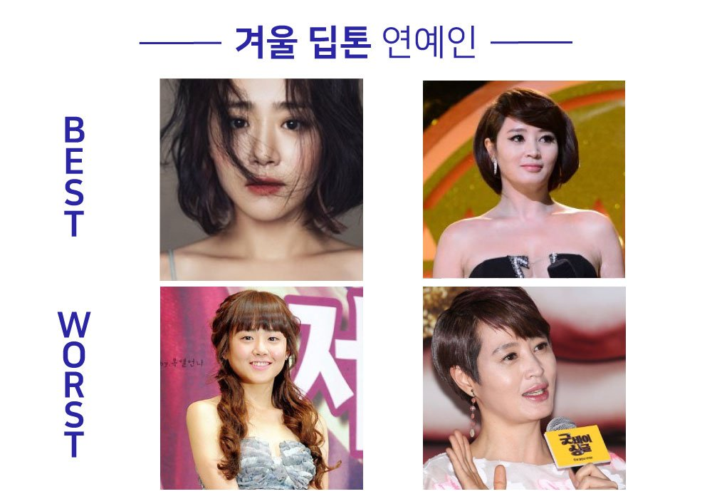
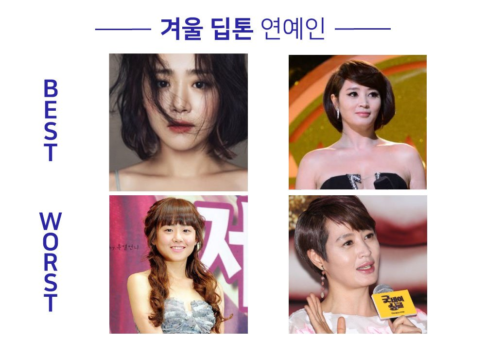

어둡고 진한 플럼, 핏빛레드, 버건디레드,
다크레드가 잘어울리시는 분들이
겨울 딥 타입이십니다.
뭔가 멋있는 분위기를 가진 분들이 떠오르는 퍼스널 컬러입니다!
다크함이 매력인 겨울딥 타입은 낮은 채도
컬러의 포인트 컬러로 얼굴빛이 살아납니다!
많은 분들이 얼굴은 하얗게, 입술은 빨갛게 바르면
얼굴이 환해보인다고 착각하시는데
그건 그냥 얼굴이 창백하고 입술이 둥둥 뜨는 것입니다.(정색)
이건 보통 겨울 딥 분들을 보고 하는 말일거에요!!!
강렬한 레드립이 부담스럽지 않고 오히려 착 달라붙거든요
희미한 색들은 피하시는 게 좋답니다!
겨울 딥 특징은 다음과 같습니다.


 
